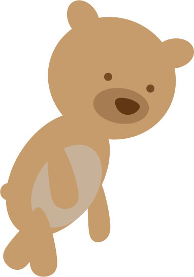
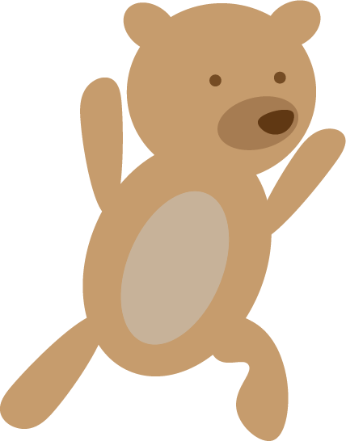
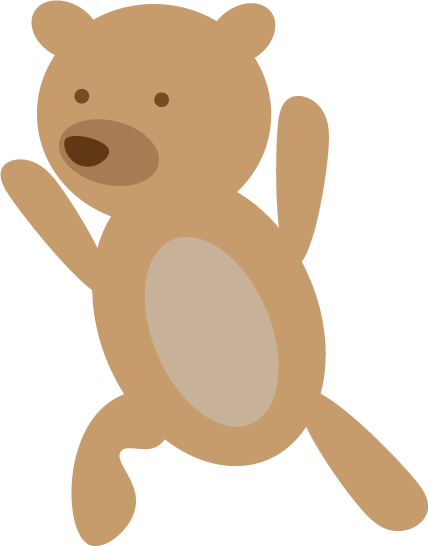
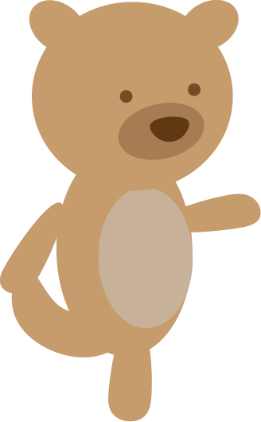
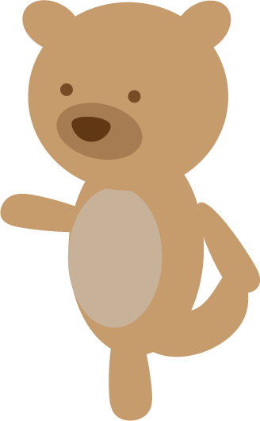
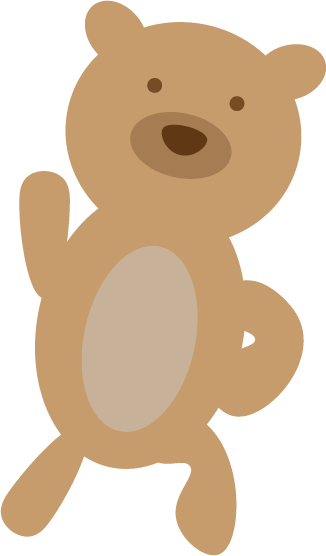
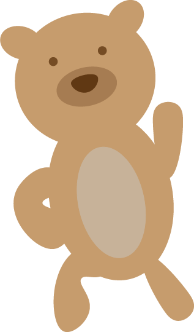

Gentle Stretches with Eddie
Hamstring Stretch
Keep your legs straight, and reach for your toes.
Hamstring Stretch with Crossed Legs
Cross one leg over the other and reach for your toes. Hold each leg for 20 seconds.
Right Leg Lunge
While facing forward plant your left foot, bend your knee so that it's directly above your foot, raise your arms straight over head, and hold the lunge for 20s.
Left Leg Lunge
While facing forward plant your right foot, bend your knee so that it's directly above your foot, raise your arms straight over head, and hold the lunge for 20s.
Quadriceps Stretch: Right Leg
Grab your right ankle with your right arm, and hold for 20 seconds. Feel free to hold a chair, wall, or friend for balance!
Quadriceps Stretch: Left Leg
Grab your left ankle with your leftte arm, and hold for 20 seconds. Feel free to hold a chair, wall, or friend for balance!
Right Side Stretch
Step your feet wider than your hips, bend your left leg, raise your right arm, and hold for a great right leg stretch.
Left Side Stretch
Step your feet wider than your hips, bend your right leg, raise your left arm, and hold for a great left leg stretch.